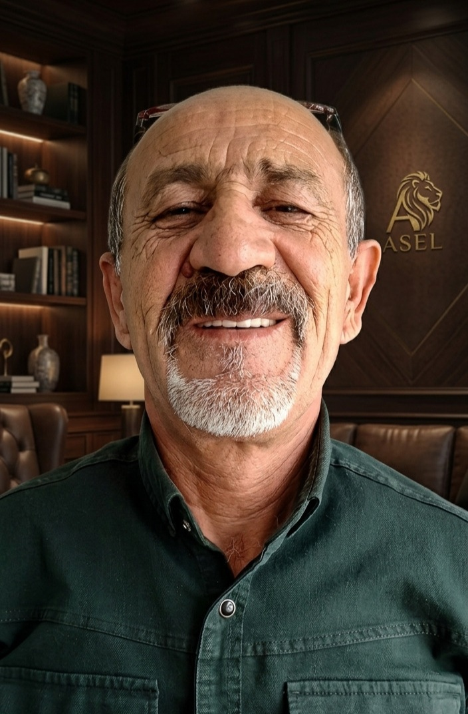

✈
Havalimanı Transferi
Uçuş takibi, isim tabelası ve bekleme dahil kapıdan kapıya transfer.
Havalimanı karşılama, profesyonel şoför, seçkin araçlar ve 7/24 operasyon desteğiyle Antalya transfer deneyimini yeniden tasarlıyoruz.
Rezervasyondan varışa kadar her adımı sade, güvenli ve kontrol edilebilir hâle getiriyoruz.
Uçuş takibi, isim tabelası ve bekleme dahil kapıdan kapıya transfer.
Saatlik veya günlük profesyonel şoförlü VIP araç hizmeti.
Aileler ve gruplar için geniş bagaj kapasiteli Sprinter seçenekleri.
Gece veya gündüz, değişen uçuş ve rota durumlarında hızlı destek.


Rezervasyon bilgileri, uçuş saati, araç kapasitesi ve özel talepler tek akışta toplanır. Her talep rota, saat, yolcu kapasitesi ve özel ihtiyaçlara göre operasyon ekibi tarafından değerlendirilir.

Bu alan yayın öncesi gerçek Google yorumlarıyla değiştirilmelidir.
“Uçağımız gecikmesine rağmen bizi beklediler. Araç çok temizdi ve iletişim hızlıydı.”
“Çocuk koltuğu hazırdı, şoför çok nazikti. Kemer transferimiz sorunsuz geçti.”
“Kalabalık grubumuz için doğru araç yönlendirdiler. Tekrar tercih edeceğiz.”